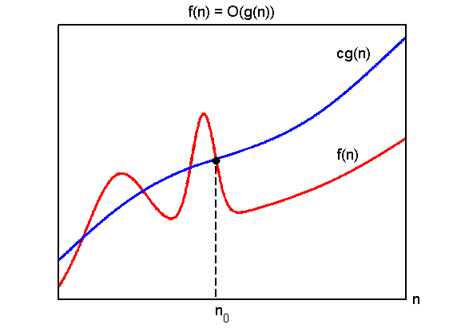
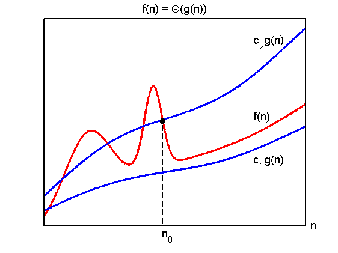

Illustration of bigO and bigTheta.
function bigO
domain = 0:0.01:6;
f = @(x) 0.5*x + 2*gaussProb(x,1,0.5.^2)' + gaussProb(x,2.5,0.2.^2)' + 0.2*sin(x);
g1 = @(x) 2*x/3 + 0.3*sin(1.1*x) + 0.7;
g2 = @(x)0.5*g1(x);
intersect = find(abs(f(domain) - g1(domain)) < 0.05);
xint = domain(intersect(end));
props = {'VerticalAlignment','baseline','FontSize',14,'Position'};
for i=1:2
setup
initialPlots;
annotate;
end
figure(1);
text('Parent',gca,props{:},[4.800 4.4000 0],'String','cg(n)');
title('f(n) = O(g(n))','FontSize',14);
figure(2);
text('Parent',gca,props{:},[4.800 4.4000 0],'String','c_2g(n)');
plot(domain,g2(domain),'-b','LineWidth',2.5);
text('Parent',gca,props{:},[4.800 1.5000 0],'String','c_1g(n)');
title('f(n) = \Theta(g(n))','FontSize',14);
function setup()
figure; hold on
set(gca,'XTick',[],'YTick',[],'box','on','LineWidth',2);
pdfcrop;
end
function initialPlots
plot([xint;xint],[0;f(xint)],'--k','LineWidth',1.5);
plot(domain,f(domain),'-r','LineWidth',2.5);
plot(domain,g1(domain),'-b','LineWidth',2.5);
plot(xint,f(xint),'.k','MarkerSize',25);
end
function annotate()
text('Parent',gca,props{:},[6.100 -0.1000 0],'String','n');
text('Parent',gca,props{:},[2.700 -0.300 0],'String','n_0');
text('Parent',gca,props{:},[4.800 2.5500 0],'String','f(n)');
end
end
 